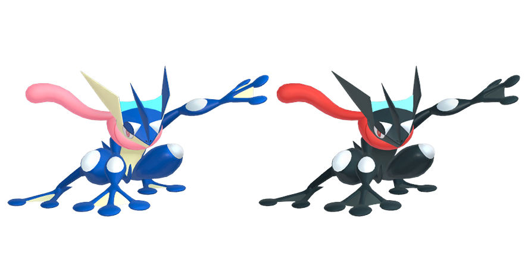
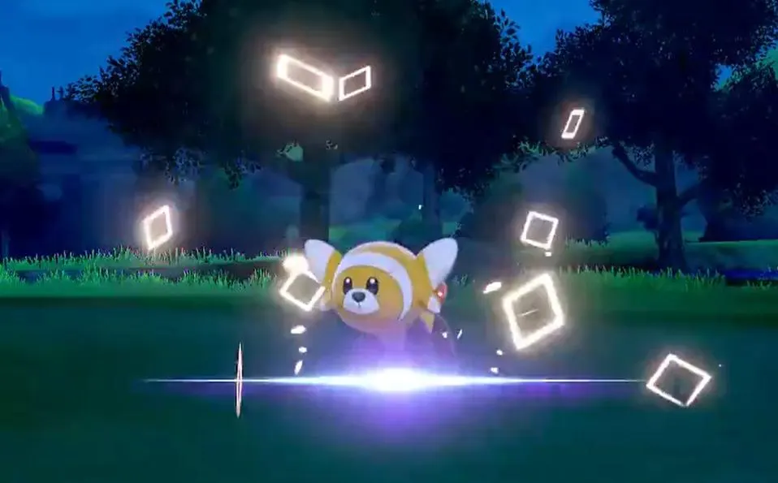

Shiny pokemon have been a constant in the videogames ever since their introduction all the way back in Generation 2, and now, so many years later, hundreds of trainers have made their goal to collect as many of these coveted creatures. With a spawn chance of as low as 1 in 4096 per encounter, it may seem as a daunting task to attempt to hunt for one, but with the right tools and proper preparations, this process can be greatly improved, and even enjoyed!

But what makes these rare Pokemon so desired? Surely there's something really special about them to grant them being so rare, are they stronger than normal Pokemon? Well, no. In fact, the only thing that differentiates these rarer Pokemon are their alternate color and the special sparkly animation that plays each time they are sent out. The difference can be as simple as just a hue change, to an entirely different color scheme.
As you can see on the image, normal Greninja is on the left while shiny Greninja is on the right.
Now, technically, shinys have been in the games since the very begining, at least, when it comes to the code, but visually they were "added" in Generation 2. What determines shininess has changed a little throught the generations.
In Generation 1 and 2, it was determined by the Pokemon's DVs; their stats and "genes" the Defence DVs and Attack DVs had to be an specific value for the Pokemon to be considered shiny. The chance for this to happen 1/8192 per Pokemon (0.01%)
However, ever since Generation 3, the formula has changed. What determines shininess now are 3 values: the trainer's Trainer ID, their Secret ID, which are both generated once you start the game, and the Pokemon's Personality Value, a hidden 32 bit unsigned integer. All numbers are randomly generated, and the result after applying the formula that determines shininess will give a result between 0 and 65535. If this resulting number is less than 8, the Pokemon will be shiny.
 In Generation 6, the formula was slightly changed again, this time in the player's favor, now the result only had to be lower than 16, esentially doubling the chances, and giving the rate we now have of 1/4096 (0.02%). Aditionally, in Generation 8, if the value is 0, the Pokemon will be considered a Fateful Encounter, and will have squared particles, instead of the normal star-like.
In this page, you'll find everthing you need for you to be ready to start hunting shiny Pokemon, from a list of the most commonly used methods, to a tracker for you to register the shiny Pokemon you've found.
Happy Hunting!